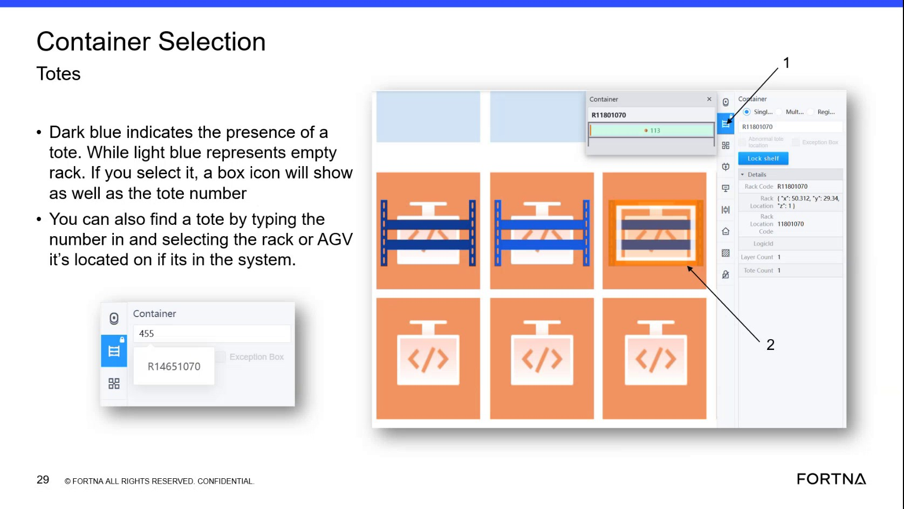

| Procedure ID | proc_send_agv_to_selected_square_robot_selection_goto_confirm_v1 |
|---|---|
| Title | Send an AGV to a selected square using Robot Selection → Go-to (Confirm) and verify AGV info updates |
| Procedure Type | operation |
| Primary Role | operator |
| Support Safe | Yes |
| Capability Tags | robot_command_or_task_state |
| Access Surface | rms_ui |
| Audience Roles | operator |
| Failure Pattern Tags | None |
| Validation Status | needs_sme_review |
| Merge Status | source_finalized |
Use the live OptiSweep interface object selection to select an AGV (cell phone/object icon) so the AGV information panel updates, then use Go-to → select a destination square → Confirm to send an AGV that is not in a task to the selected square (example recovery: drop it off at the hospital).
When you need to recover an AGV quickly by sending it to a chosen square using Go-to, specifically described for an AGV that is “not in a task.”

Responsible role: operator
Instruction:
Open the live OptiSweep interface that supports “Robot Selection.” Under the AGV view, select the AGV object (the segment references selecting a “cell phone” icon).
Expected result:
After selecting the AGV object (cell phone), the interface shows the AGV information.
Stop or Escalate If:
Responsible role: operator
Instruction:
With the AGV selected, select the “Go to” function for that AGV.
Expected result:
The Go-to function is selected/active for the selected AGV (ready for destination square selection).
Responsible role: operator
Instruction:
Select the destination square on the map/grid for where you want the AGV to go.
Expected result:
The destination square selection is made (the chosen square is the target for the Go-to request).
Responsible role: operator
Instruction:
Select “Confirm” to submit the Go-to request.
Expected result:
The Go-to request is submitted via Confirm.
Stop or Escalate If:
Responsible role: operator
Instruction:
Observe that the AGV is now being routed to the selected square (example recovery use: drop it off at the hospital).
Expected result:
The interface/system reflects that the AGV is being routed to the selected square; example: hospital drop-off use case.
Stop or Escalate If: